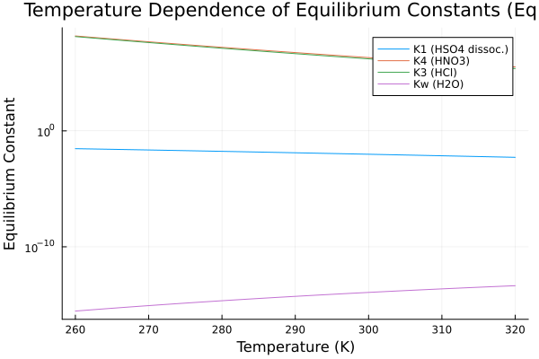
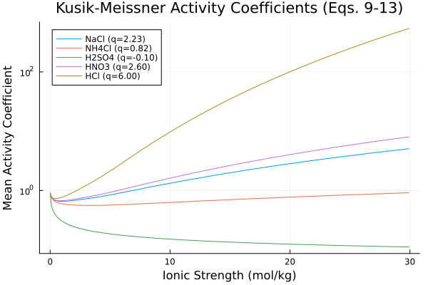
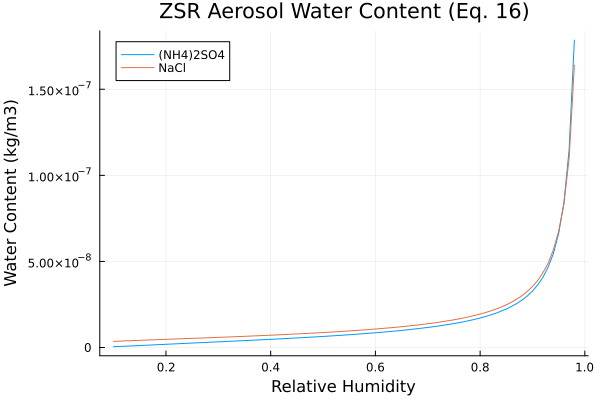
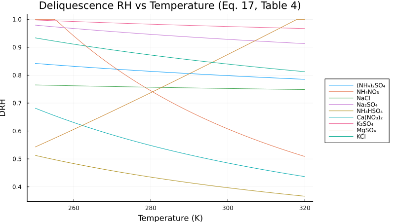
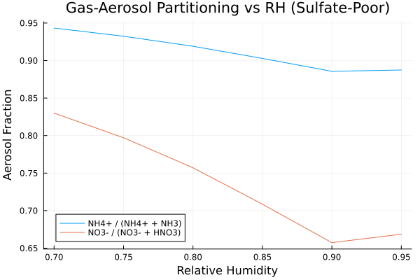
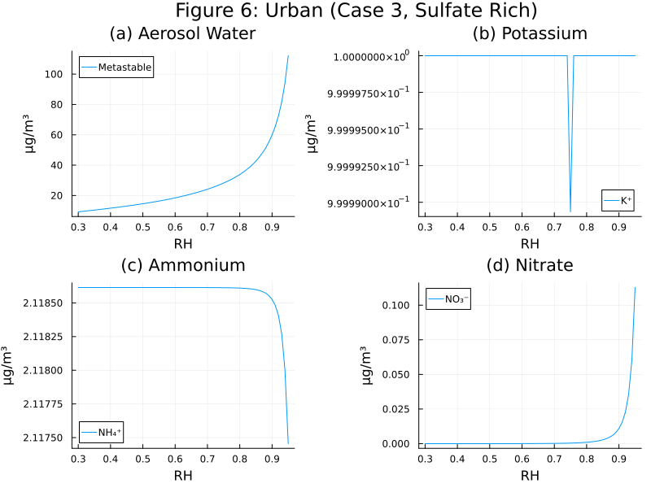
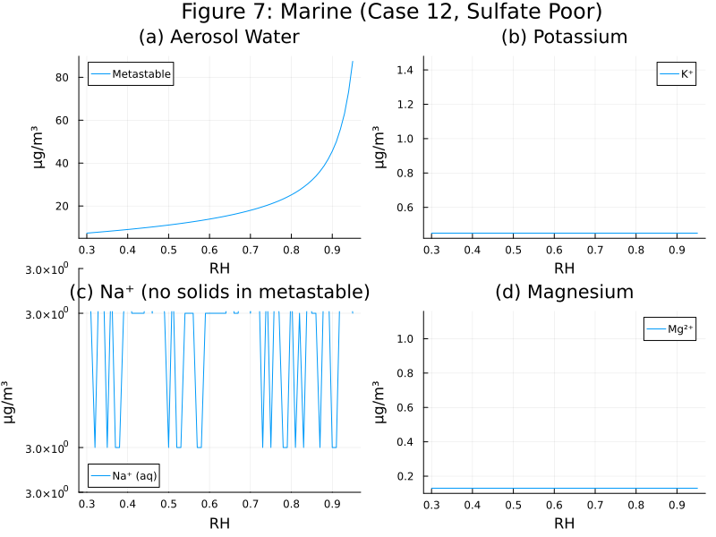
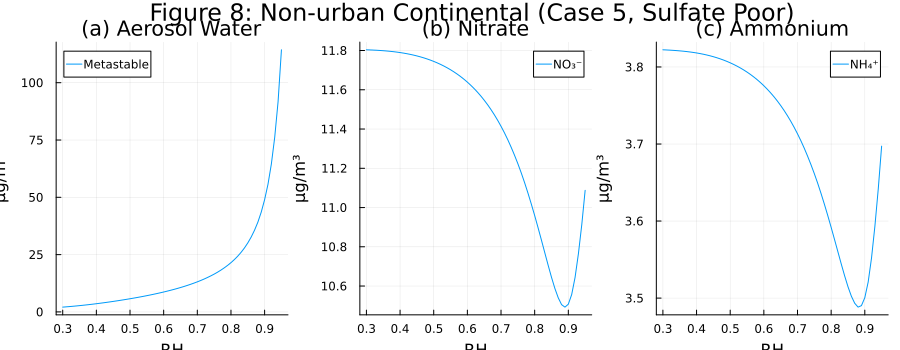
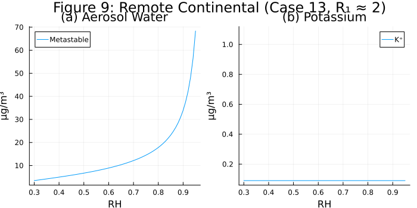

ISORROPIA II (Fountoukis & Nenes, 2007)
Overview
ISORROPIA II is an inorganic aerosol thermodynamic equilibrium model for the K⁺–Ca²⁺–Mg²⁺–NH₄⁺–Na⁺–SO₄²⁻–NO₃⁻–Cl⁻–H₂O system. It computes the equilibrium partitioning of semi-volatile inorganic species between gas, aqueous, and solid phases.
The implementation supports two solution modes via the stable parameter:
- Metastable (
stable=0, default): No solid precipitation — the aerosol is assumed to be a liquid solution at all relative humidities. - Stable (
stable=1): Solid precipitation is allowed — salts crystallize when the solution becomes supersaturated. The mutual deliquescence relative humidity (MDRH) from Table 5 is enforced: below the MDRH for the given salt mixture, the aerosol is completely dry (crystalline). Temperature-dependent DRH values follow Eq. 17 and Table 4.
Reference: Fountoukis, C. and Nenes, A.: ISORROPIA II: a computationally efficient thermodynamic equilibrium model for K⁺–Ca²⁺–Mg²⁺–NH₄⁺–Na⁺–SO₄²⁻–NO₃⁻–Cl⁻–H₂O aerosols, Atmos. Chem. Phys., 7, 4639–4659, 2007.
Aerosol.IsorropiaEquilibrium — Function
IsorropiaEquilibrium(; name=:IsorropiaEquilibrium)ISORROPIA II inorganic aerosol thermodynamic equilibrium model for the K⁺–Ca²⁺–Mg²⁺–NH₄⁺–Na⁺–SO₄²⁻–NO₃⁻–Cl⁻–H₂O system.
Supports both metastable (no solids) and stable (with solid precipitation) solution modes, controlled by the stable parameter (0=metastable, 1=stable).
The model solves 51 coupled algebraic equations:
- 8 mass balance equations (with solid stoichiometric contributions in stable mode)
- 1 charge balance (electroneutrality)
- 5 aqueous equilibrium expressions (HSO₄⁻, NH₃, HNO₃, HCl, H₂O)
- 1 ZSR water content equation with MDRH cutoff (Eqs. 16-18, 22)
- 1 ionic strength definition
- 16 activity coefficient equations (Kusik-Meissner, Eqs. 9-13)
- 19 solid precipitation equations (Fischer-Burmeister NCP complementarity)
In stable mode, solid salts precipitate when the solution becomes supersaturated. Each solid equilibrium uses a smooth complementarity formulation: either the solid amount is zero, or the solution is exactly at saturation.
Deliquescence: Temperature-dependent DRH values are computed for each salt using Eq. 17 and Table 4. The mutual deliquescence relative humidity (MDRH) from Table 5 is enforced in stable mode: below the MDRH, the aerosol water content is driven to zero, producing a completely dry (crystalline) aerosol. In metastable mode, the MDRH cutoff is not applied.
Activity coefficients are computed using the Kusik-Meissner binary relationship (Eqs. 9-13) with temperature correction (Eq. 14).
Reference: Fountoukis, C. and Nenes, A.: ISORROPIA II: a computationally efficient thermodynamic equilibrium model for K⁺–Ca²⁺–Mg²⁺–NH₄⁺–Na⁺–SO₄²⁻–NO₃⁻–Cl⁻–H₂O aerosols, Atmos. Chem. Phys., 7, 4639–4659, 2007.
Data Provenance
This implementation was developed from the published scientific literature. No source code from the original ISORROPIA or ISORROPIA II Fortran implementations was used. The specific data sources are:
Equations and algorithms: All governing equations — including the van't Hoff temperature dependence (Eq. 5), Kusik-Meissner activity coefficient model (Eqs. 9–13), temperature correction (Eq. 14), ZSR water content method (Eq. 16), DRH temperature dependence (Eq. 17), and composition-dependent MDRH selection (Eq. 22) — are from the primary reference: Fountoukis and Nenes (2007).
Thermodynamic equilibrium constants (K₀, A, B parameters for 23 reactions): Table 2 of Fountoukis and Nenes (2007).
Deliquescence relative humidity (DRH at 298.15 K and temperature correction coefficients for 19 salts): Table 4 of Fountoukis and Nenes (2007).
Mutual deliquescence relative humidity (MDRH thresholds for 6 composition regimes): Table 5 of Fountoukis and Nenes (2007).
Kusik-Meissner Q parameters (q and charge product z for 18 binary electrolyte pairs): Originally from Kusik, C. L. and Meissner, H. P.: Electrolyte activity coefficients in inorganic processing, AIChE Symp. Ser., 74(173), 14–20, 1978; as compiled for atmospheric aerosol applications by Kim, Y. P., Seinfeld, J. H., and Saxena, P.: Atmospheric gas-aerosol equilibrium: II. Analysis of common approximations and activity coefficient calculation methods, Aerosol Sci. Technol., 19, 182–198, 1993.
ZSR binary molality lookup tables (molality as a function of water activity for 19 binary electrolyte-water systems, 100 entries each): From the Extended AIM Aerosol Thermodynamics Model (E-AIM, Model III; http://www.aim.env.uea.ac.uk/aim/aim.php), developed by Clegg, S. L., Brimblecombe, P., and Wexler, A. S. These values are computed from Pitzer-Simonson-Clegg thermodynamic equations fitted to experimental measurements of binary electrolyte-water systems at 298.15 K.
Numerical solver approach: This implementation differs architecturally from the original ISORROPIA II Fortran code. Rather than using the composition-regime-based solution strategy of the original (which selects among dozens of specialized subroutines), this implementation formulates the full system of 51 coupled algebraic equations and solves them simultaneously using a nonlinear solver. Solid precipitation uses a smooth Fischer-Burmeister complementarity formulation rather than explicit case-based logic.
Implementation
The model solves a system of coupled algebraic equations that depends on the solution mode:
Metastable mode (stable=0, default): 21 equations total
- 8 mass balance equations (no solid terms)
- 1 electroneutrality (charge balance) equation
- 5 aqueous equilibrium expressions (HSO₄⁻, NH₃, HNO₃, HCl, H₂O)
- 1 ZSR water content equation (Eq. 16)
- 1 ionic strength definition
- 5 activity coefficient equations (Kusik-Meissner, Eqs. 9-13, with temperature correction Eq. 14)
Stable mode (stable=1): Additional equations for solid precipitation
- All metastable equations plus 19+ solid equilibrium equations using complementarity constraints
The solid precipitation uses a smooth complementarity formulation: for each solid salt, either its amount is zero (undersaturated) or the ion activity product equals the solubility product (at dissolution equilibrium). In metastable mode (stable=0), all solid equations reduce to s = 0.
State Variables
using DataFrames, ModelingToolkit, Symbolics, DynamicQuantities
using Aerosol
sys = IsorropiaEquilibrium()
compiled = mtkcompile(sys)
vars = unknowns(compiled)
DataFrame(
:Name => [string(Symbolics.tosymbol(v, escape = false)) for v in vars],
:Units => [dimension(ModelingToolkit.get_unit(v)) for v in vars],
:Description => [ModelingToolkit.getdescription(v) for v in vars]
)| Row | Name | Units | Description |
|---|---|---|---|
| String | Dimensio… | String | |
| 1 | s_NaHSO4 | m⁻³ mol | Solid NaHSO₄ concentration |
| 2 | s_NH4HSO4 | m⁻³ mol | Solid NH₄HSO₄ concentration |
| 3 | s_CaSO4 | m⁻³ mol | Solid CaSO₄ concentration |
| 4 | c_HSO4 | m⁻³ mol | Aqueous HSO₄⁻ concentration |
| 5 | s_LC | m⁻³ mol | Solid letovicite (NH₄)₃H(SO₄)₂ concentration |
| 6 | s_KHSO4 | m⁻³ mol | Solid KHSO₄ concentration |
| 7 | c_SO4 | m⁻³ mol | Aqueous SO₄²⁻ concentration |
| 8 | c_NH4 | m⁻³ mol | Aqueous NH₄⁺ concentration |
| 9 | s_NH4NO3 | m⁻³ mol | Solid NH₄NO₃ concentration |
| 10 | s_NH4Cl | m⁻³ mol | Solid NH₄Cl concentration |
| 11 | s_MgNO32 | m⁻³ mol | Solid Mg(NO₃)₂ concentration |
| 12 | s_KNO3 | m⁻³ mol | Solid KNO₃ concentration |
| 13 | c_NO3 | m⁻³ mol | Aqueous NO₃⁻ concentration |
| 14 | s_MgCl2 | m⁻³ mol | Solid MgCl₂ concentration |
| 15 | s_CaCl2 | m⁻³ mol | Solid CaCl₂ concentration |
| 16 | s_KCl | m⁻³ mol | Solid KCl concentration |
| 17 | c_Cl | m⁻³ mol | Aqueous Cl⁻ concentration |
| 18 | c_Ca | m⁻³ mol | Aqueous Ca²⁺ concentration |
| 19 | c_K | m⁻³ mol | Aqueous K⁺ concentration |
| 20 | c_Mg | m⁻³ mol | Aqueous Mg²⁺ concentration |
| 21 | c_H | m⁻³ mol | Aqueous H⁺ concentration |
| 22 | c_OH | m⁻³ mol | Aqueous OH⁻ concentration |
Parameters
params = parameters(compiled)
DataFrame(
:Name => [string(Symbolics.tosymbol(p, escape = false)) for p in params],
:Units => [dimension(ModelingToolkit.get_unit(p)) for p in params],
:Default => [ModelingToolkit.getdefault(p) for p in params],
:Description => [ModelingToolkit.getdescription(p) for p in params]
)| Row | Name | Units | Default | Description |
|---|---|---|---|---|
| String | Dimensio… | Real | String | |
| 1 | W_Na_total | m⁻³ mol | 0.0 | Total sodium concentration |
| 2 | W_SO4_total | m⁻³ mol | 1.0e-7 | Total sulfate concentration |
| 3 | W_NH3_total | m⁻³ mol | 2.0e-7 | Total ammonia + ammonium concentration |
| 4 | W_NO3_total | m⁻³ mol | 1.0e-7 | Total nitrate + nitric acid concentration |
| 5 | W_Cl_total | m⁻³ mol | 0.0 | Total chloride + HCl concentration |
| 6 | W_Ca_total | m⁻³ mol | 0.0 | Total calcium concentration |
| 7 | W_K_total | m⁻³ mol | 0.0 | Total potassium concentration |
| 8 | W_Mg_total | m⁻³ mol | 0.0 | Total magnesium concentration |
| 9 | T_env | K | 298.15 | Ambient temperature |
| 10 | RH | 0.8 | Ambient relative humidity (dimensionless) | |
| 11 | stable | 0 | Solution mode: 0=metastable (no solids), 1=stable (with solids) | |
| 12 | K4_0_atm | m kg⁻³ s² mol² | 2.511e6 | HNO3 gas-liquid equilibrium constant at T0 in atm units |
| 13 | K13_0 | kg⁻² mol² | 37.66 | NaCl dissolution K0 |
| 14 | K12_B | 16.01 | NaNO3 dissolution B (dimensionless) | |
| 15 | K19_0 | kg⁻² mol² | 0.872 | KNO3 dissolution K0 |
| 16 | K3_A | 30.2 | HCl gas-liquid enthalpy parameter (dimensionless) | |
| 17 | K21s_B | 0.0 | MgSO4 dissolution B (dimensionless) | |
| 18 | K18_B | 17.96 | KHSO4 dissolution B (dimensionless) | |
| 19 | K15_B | 0.0 | Ca(NO3)2 dissolution B (dimensionless) | |
| 20 | K10_0 | kg⁻³ mol³ | 0.4799 | Na2SO4 dissolution K0 |
| 21 | K7_B | 54.4 | Letovicite dissolution B (dimensionless) | |
| 22 | K22_A | -1.5 | NH3 dissociation enthalpy parameter (dimensionless) | |
| 23 | K18_A | -8.423 | KHSO4 dissolution A (dimensionless) | |
| 24 | K9_B | 2.4 | NH4Cl dissolution B (dimensionless) | |
| 25 | K22_0 | kg⁻¹ mol | 1.805e-5 | NH3 dissociation equilibrium constant at T0 |
| 26 | K17_0 | kg⁻³ mol³ | 0.01569 | K2SO4 dissolution K0 |
| 27 | K19_B | 19.39 | KNO3 dissolution B (dimensionless) | |
| 28 | K21s_0 | kg⁻² mol² | 107900.0 | MgSO4 dissolution K0 |
| 29 | K7_0 | kg⁻⁵ mol⁵ | 29.3 | Letovicite dissolution K0 |
| 30 | K9_0_atm2 | m⁻² kg² s⁻⁴ | 1.086e-16 | NH4Cl dissolution K0 in atm² |
| 31 | K6_B | 15.83 | NH4HSO4 dissolution B (dimensionless) | |
| 32 | K21_A | 13.79 | NH3 dissolution enthalpy parameter (dimensionless) | |
| 33 | T_0 | K | 298.15 | Reference temperature for thermodynamic data |
| 34 | Kw_B | 26.92 | Water dissociation heat capacity parameter (dimensionless) | |
| 35 | K1_A | 8.85 | HSO4 dissociation enthalpy parameter (dimensionless) | |
| 36 | K1_0 | kg⁻¹ mol | 0.01015 | HSO4 dissociation equilibrium constant at T0 |
| 37 | K8_B | 6.12 | NH4NO3 dissolution B (dimensionless) | |
| 38 | K4_B | 16.83 | HNO3 gas-liquid heat capacity parameter (dimensionless) | |
| 39 | K12_0 | kg⁻² mol² | 11.97 | NaNO3 dissolution K0 |
| 40 | K5_B | 38.57 | (NH4)2SO4 dissolution B (dimensionless) | |
| 41 | K5_A | -2.65 | (NH4)2SO4 dissolution A (dimensionless) | |
| 42 | K14_A | 0.0 | CaSO4 dissolution A (dimensionless) | |
| 43 | K11_B | 14.75 | NaHSO4 dissolution B (dimensionless) | |
| 44 | K7_A | -5.19 | Letovicite dissolution A (dimensionless) | |
| 45 | K21_0_atm | m kg⁻² s² mol | 57.64 | NH3 dissolution equilibrium constant at T0 in atm units |
| 46 | K3_0_atm | m kg⁻³ s² mol² | 1.971e6 | HCl gas-liquid equilibrium constant at T0 in atm units |
| 47 | K16_B | 0.0 | CaCl2 dissolution B (dimensionless) | |
| 48 | K15_0 | kg⁻³ mol³ | 606700.0 | Ca(NO3)2 dissolution K0 |
| 49 | K8_A | -74.38 | NH4NO3 dissolution A (dimensionless) | |
| 50 | K8_0_atm2 | m⁻² kg² s⁻⁴ | 4.3559e-17 | NH4NO3 dissolution K0 in atm² |
| 51 | K4_A | 29.17 | HNO3 gas-liquid enthalpy parameter (dimensionless) | |
| 52 | K23_0 | kg⁻³ mol³ | 9.557e21 | MgCl2 dissolution K0 |
| 53 | K17_B | 45.81 | K2SO4 dissolution B (dimensionless) | |
| 54 | Kw_A | -22.52 | Water dissociation enthalpy parameter (dimensionless) | |
| 55 | K15_A | -11.299 | Ca(NO3)2 dissolution A (dimensionless) | |
| 56 | K10_A | 0.98 | Na2SO4 dissolution A (dimensionless) | |
| 57 | K17_A | -9.585 | K2SO4 dissolution A (dimensionless) | |
| 58 | half | 0.5 | Dimensionless half constant | |
| 59 | K11_0 | kg⁻³ mol³ | 24130.0 | NaHSO4 dissolution K0 |
| 60 | K6_0 | kg⁻³ mol³ | 138.3 | NH4HSO4 dissolution K0 |
| 61 | K16_A | -8.698 | CaCl2 dissolution A (dimensionless) | |
| 62 | Kw_0 | kg⁻² mol² | 1.01e-14 | Water dissociation equilibrium constant at T0 |
| 63 | K20_B | 19.95 | KCl dissolution B (dimensionless) | |
| 64 | K22s_A | -8.754 | Mg(NO3)2 dissolution A (dimensionless) | |
| 65 | K12_A | -8.22 | NaNO3 dissolution A (dimensionless) | |
| 66 | K22_B | 26.92 | NH3 dissociation heat capacity parameter (dimensionless) | |
| 67 | K19_A | -14.08 | KNO3 dissolution A (dimensionless) | |
| 68 | K23_A | -1.347 | MgCl2 dissolution A (dimensionless) | |
| 69 | K21_B | -5.393 | NH3 dissolution heat capacity parameter (dimensionless) | |
| 70 | K6_A | -2.87 | NH4HSO4 dissolution A (dimensionless) | |
| 71 | unity | 1.0 | Dimensionless unity constant | |
| 72 | K23_B | 0.0 | MgCl2 dissolution B (dimensionless) | |
| 73 | K5_0 | kg⁻³ mol³ | 1.817 | (NH4)2SO4 dissolution K0 |
| 74 | K20_0 | kg⁻² mol² | 8.68 | KCl dissolution K0 |
| 75 | K1_B | 25.14 | HSO4 dissociation heat capacity parameter (dimensionless) | |
| 76 | K22s_B | 0.0 | Mg(NO3)2 dissolution B (dimensionless) | |
| 77 | K22s_0 | kg⁻³ mol³ | 2.507e15 | Mg(NO3)2 dissolution K0 |
| 78 | K11_A | 0.79 | NaHSO4 dissolution A (dimensionless) | |
| 79 | K13_A | -1.56 | NaCl dissolution A (dimensionless) | |
| 80 | K9_A | -71.0 | NH4Cl dissolution A (dimensionless) | |
| 81 | K3_B | 19.91 | HCl gas-liquid heat capacity parameter (dimensionless) | |
| 82 | K14_B | 0.0 | CaSO4 dissolution B (dimensionless) | |
| 83 | K20_A | -6.902 | KCl dissolution A (dimensionless) | |
| 84 | K18_0 | kg⁻³ mol³ | 24.016 | KHSO4 dissolution K0 |
| 85 | K16_0 | kg⁻³ mol³ | 7.974e11 | CaCl2 dissolution K0 |
| 86 | K10_B | 39.75 | Na2SO4 dissolution B (dimensionless) | |
| 87 | R_gas_si | m² kg s⁻² K⁻¹ mol⁻¹ | 8.31446 | Gas constant (SI) |
| 88 | K14_0 | kg⁻² mol² | 4.319e-5 | CaSO4 dissolution K0 |
| 89 | K21s_A | 36.798 | MgSO4 dissolution A (dimensionless) | |
| 90 | K13_B | 16.9 | NaCl dissolution B (dimensionless) |
Equations
equations(sys)51-element Vector{Symbolics.Equation}:
0 ~ -W_Na_total + s_NaCl(t) + 2s_Na2SO4(t) + s_NaHSO4(t) + c_Na(t) + s_NaNO3(t)
0 ~ -W_SO4_total + s_CaSO4(t) + s_NH42SO4(t) + s_MgSO4(t) + c_SO4(t) + c_HSO4(t) + s_Na2SO4(t) + s_NaHSO4(t) + s_KHSO4(t) + 2s_LC(t) + s_NH4HSO4(t) + s_K2SO4(t)
0 ~ -W_NH3_total + s_NH4Cl(t) + 2s_NH42SO4(t) + g_NH3(t) + 3s_LC(t) + c_NH4(t) + s_NH4NO3(t) + s_NH4HSO4(t)
0 ~ -W_NO3_total + 2s_CaNO32(t) + c_NO3(t) + g_HNO3(t) + 2s_MgNO32(t) + s_NaNO3(t) + s_KNO3(t) + s_NH4NO3(t)
0 ~ -W_Cl_total + s_NH4Cl(t) + 2s_MgCl2(t) + s_KCl(t) + c_Cl(t) + s_NaCl(t) + 2s_CaCl2(t) + g_HCl(t)
0 ~ -W_Ca_total + s_CaSO4(t) + c_Ca(t) + s_CaNO32(t) + s_CaCl2(t)
0 ~ -W_K_total + s_KCl(t) + s_KHSO4(t) + s_KNO3(t) + c_K(t) + 2s_K2SO4(t)
0 ~ -W_Mg_total + s_MgCl2(t) + s_MgSO4(t) + s_MgNO32(t) + c_Mg(t)
0 ~ 2c_Ca(t) - c_Cl(t) - c_NO3(t) - 2c_SO4(t) - c_HSO4(t) + c_H(t) + 2c_Mg(t) - c_OH(t) + c_Na(t) + c_K(t) + c_NH4(t)
0 ~ (-K1_0*exp(K1_A*(-1.0 + T_0 / T_env) + K1_B*(1.0 + (-T_0) / T_env + log(T_0 / T_env)))*(γ_HHSO4(t)^2)*c_HSO4(t)) / W_w(t) + ((γ_H2SO4(t)^3)*c_SO4(t)*c_H(t)) / (W_w(t)^2)
⋮
0 ~ stable*Aerosol._iso2_fb_ncp(s_Na2SO4(t), unity + (-(γ_Na2SO4(t)^3)*c_SO4(t)*((c_Na(t) / W_w(t))^2)) / (K10_0*exp(K10_A*(-1.0 + T_0 / T_env) + K10_B*(1.0 + (-T_0) / T_env + log(T_0 / T_env)))*W_w(t))) + (-stable + unity)*s_Na2SO4(t)
0 ~ stable*Aerosol._iso2_fb_ncp(s_NaHSO4(t), unity + (-c_SO4(t)*c_H(t)*(sqrt((γ_HHSO4(t)*γ_NaCl(t)) / γ_HCl(t))^3)*c_Na(t)) / (K11_0*(W_w(t)^3)*exp(K11_A*(-1.0 + T_0 / T_env) + K11_B*(1.0 + (-T_0) / T_env + log(T_0 / T_env))))) + (-stable + unity)*s_NaHSO4(t)
0 ~ stable*Aerosol._iso2_fb_ncp(s_NaNO3(t), unity + (-c_NO3(t)*(γ_NaNO3(t)^2)*c_Na(t)) / (K12_0*exp(K12_A*(-1.0 + T_0 / T_env) + K12_B*(1.0 + (-T_0) / T_env + log(T_0 / T_env)))*(W_w(t)^2))) + (-stable + unity)*s_NaNO3(t)
0 ~ (-stable + unity)*s_NaCl(t) + stable*Aerosol._iso2_fb_ncp(s_NaCl(t), unity + (-c_Cl(t)*c_Na(t)*(γ_NaCl(t)^2)) / (K13_0*(W_w(t)^2)*exp(K13_A*(-1.0 + T_0 / T_env) + K13_B*(1.0 + (-T_0) / T_env + log(T_0 / T_env)))))
0 ~ (-stable + unity)*s_NH42SO4(t) + stable*Aerosol._iso2_fb_ncp(s_NH42SO4(t), unity + (-(γ_NH42SO4(t)^3)*((c_NH4(t) / W_w(t))^2)*c_SO4(t)) / (K5_0*exp(K5_A*(-1.0 + T_0 / T_env) + K5_B*(1.0 + (-T_0) / T_env + log(T_0 / T_env)))*W_w(t)))
0 ~ stable*Aerosol._iso2_fb_ncp(s_NH4HSO4(t), unity + (-(sqrt((γ_HHSO4(t)*γ_NH4Cl(t)) / γ_HCl(t))^3)*c_SO4(t)*c_H(t)*c_NH4(t)) / (K6_0*exp(K6_A*(-1.0 + T_0 / T_env) + K6_B*(1.0 + (-T_0) / T_env + log(T_0 / T_env)))*(W_w(t)^3))) + (-stable + unity)*s_NH4HSO4(t)
0 ~ stable*Aerosol._iso2_fb_ncp(s_LC(t), unity + (-(γ_NH42SO4(t)^3.0000000000000004)*((c_NH4(t) / W_w(t))^3)*sqrt((γ_HHSO4(t)*γ_NH4Cl(t)) / γ_HCl(t))*c_SO4(t)*c_HSO4(t)) / (K7_0*exp(K7_A*(-1.0 + T_0 / T_env) + K7_B*(1.0 + (-T_0) / T_env + log(T_0 / T_env)))*(W_w(t)^2))) + (-stable + unity)*s_LC(t)
0 ~ (-stable + unity)*s_NH4NO3(t) + stable*Aerosol._iso2_fb_ncp(s_NH4NO3(t), unity + (-(R_gas_si^2)*(T_env^2)*g_NH3(t)*g_HNO3(t)) / (K8_0*exp(K8_A*(-1.0 + T_0 / T_env) + K8_B*(1.0 + (-T_0) / T_env + log(T_0 / T_env)))))
0 ~ (-stable + unity)*s_NH4Cl(t) + stable*Aerosol._iso2_fb_ncp(s_NH4Cl(t), unity + (-(R_gas_si^2)*(T_env^2)*g_NH3(t)*g_HCl(t)) / (K9_0*exp(K9_A*(-1.0 + T_0 / T_env) + K9_B*(1.0 + (-T_0) / T_env + log(T_0 / T_env)))))Analysis
Equilibrium Constants vs Temperature (cf. Table 2)
The equilibrium constants follow the van't Hoff temperature dependence (Eq. 5):
\[K(T) = K_0 \exp\left[A\left(\frac{T_0}{T} - 1\right) + B\left(1 + \ln\frac{T_0}{T} - \frac{T_0}{T}\right)\right]\]
using Plots
T_range = collect(260.0:1.0:320.0)
K1_vals = [Aerosol._iso2_eq_const(1.015e-2, 8.85, 25.14, T) for T in T_range]
K4_vals = [Aerosol._iso2_eq_const(2.511e6, 29.17, 16.83, T) for T in T_range]
K3_vals = [Aerosol._iso2_eq_const(1.971e6, 30.20, 19.91, T) for T in T_range]
Kw_vals = [Aerosol._iso2_eq_const(1.010e-14, -22.52, 26.92, T) for T in T_range]
p = plot(T_range, K1_vals, label="K1 (HSO4 dissoc.)", yscale=:log10,
xlabel="Temperature (K)", ylabel="Equilibrium Constant",
title="Temperature Dependence of Equilibrium Constants (Eq. 5)")
plot!(p, T_range, K4_vals, label="K4 (HNO3)")
plot!(p, T_range, K3_vals, label="K3 (HCl)")
plot!(p, T_range, Kw_vals, label="Kw (H2O)")
p
Activity Coefficients vs Ionic Strength (cf. Eqs. 9-13)
Kusik-Meissner binary mean activity coefficients at 298.15 K:
I_range = collect(0.01:0.1:30.0)
gamma_NaCl = [Aerosol._iso2_km_gamma(2.23, 1, I) for I in I_range]
gamma_NH4Cl = [Aerosol._iso2_km_gamma(0.82, 1, I) for I in I_range]
gamma_H2SO4 = [Aerosol._iso2_km_gamma(-0.10, 2, I) for I in I_range]
gamma_HNO3 = [Aerosol._iso2_km_gamma(2.60, 1, I) for I in I_range]
gamma_HCl = [Aerosol._iso2_km_gamma(6.00, 1, I) for I in I_range]
p = plot(I_range, gamma_NaCl, label="NaCl (q=2.23)", yscale=:log10,
xlabel="Ionic Strength (mol/kg)", ylabel="Mean Activity Coefficient",
title="Kusik-Meissner Activity Coefficients (Eqs. 9-13)")
plot!(p, I_range, gamma_NH4Cl, label="NH4Cl (q=0.82)")
plot!(p, I_range, gamma_H2SO4, label="H2SO4 (q=-0.10)")
plot!(p, I_range, gamma_HNO3, label="HNO3 (q=2.60)")
plot!(p, I_range, gamma_HCl, label="HCl (q=6.00)")
p
ZSR Water Content vs RH (cf. Eq. 16)
Aerosol water content for pure salt aerosols computed using the ZSR method:
RH_range = collect(0.10:0.01:0.98)
# (NH4)2SO4: c_NH4 = 2e-7 mol/m³, c_SO4 = 1e-7 mol/m³
W_as = [Aerosol._iso2_zsr_water(rh, 0.0, 2e-7, 1e-7, 0.0, 0.0, 0.0, 0.0, 0.0, 0.0)
for rh in RH_range]
# NaCl: c_Na = 1e-7 mol/m³, c_Cl = 1e-7 mol/m³
W_nacl = [Aerosol._iso2_zsr_water(rh, 1e-7, 0.0, 0.0, 0.0, 0.0, 1e-7, 0.0, 0.0, 0.0)
for rh in RH_range]
p = plot(RH_range, W_as, label="(NH4)2SO4",
xlabel="Relative Humidity", ylabel="Water Content (kg/m3)",
title="ZSR Aerosol Water Content (Eq. 16)")
plot!(p, RH_range, W_nacl, label="NaCl")
p
DRH vs Temperature (cf. Figure 2, Eq. 17, Table 4)
Deliquescence relative humidity (DRH) for individual salts as a function of temperature. DRH(T) = DRH(T₀) × exp(coeff × (1/T - 1/T₀)) where T₀ = 298.15 K. Salts with large positive coefficients (e.g., NH₄NO₃, Ca(NO₃)₂) show strong temperature dependence, while salts with near-zero coefficients (e.g., CaSO₄, KHSO₄, KNO₃) are essentially temperature-independent.
T_drh = collect(250.0:1.0:320.0)
# Select representative salts spanning different behaviors
salts = [
(:NH42SO4, "(NH₄)₂SO₄"), (:NH4NO3, "NH₄NO₃"), (:NaCl, "NaCl"),
(:Na2SO4, "Na₂SO₄"), (:NH4HSO4, "NH₄HSO₄"), (:CaNO32, "Ca(NO₃)₂"),
(:K2SO4, "K₂SO₄"), (:MgSO4, "MgSO₄"), (:KCl, "KCl"),
]
p = plot(xlabel="Temperature (K)", ylabel="DRH",
title="Deliquescence RH vs Temperature (Eq. 17, Table 4)",
legend=:outerright, size=(800, 450))
for (sym, label) in salts
drh0, coeff = Aerosol._ISO2_DRH[sym]
drh_vals = [Aerosol._iso2_drh_T(drh0, coeff, T) for T in T_drh]
plot!(p, T_drh, drh_vals, label=label)
end
p
MDRH: Mutual Deliquescence (Table 5)
The mutual deliquescence relative humidity (MDRH) is the minimum RH at which any aqueous phase can exist for a mixture of salts. Below MDRH, the aerosol is completely crystalline. The MDRH depends on the salt mixture composition (sulfate ratio R₁ and presence of crustal/sodium species). In stable mode, the water content is smoothly driven to zero below MDRH using a logistic transition function.
| Composition Regime | MDRH |
|---|---|
| Crustal species present | 0.200 |
| Na present, no crustal (sulfate-poor) | 0.363 |
| NH₄-only (sulfate-poor) | 0.540 |
| NH₄-only (sulfate-rich) | 0.400 |
| Na present (sulfate-rich) | 0.363 |
| Crustal species present (sulfate-rich) | 0.200 |
Equilibrium Partitioning: Gas-Aerosol Split
The fraction of semi-volatile species in the aerosol phase as a function of RH, for a sulfate-poor continental aerosol (SO₄=1e-7, NH₃=3e-7, NO₃=1e-7 mol/m³):
using NonlinearSolve, SciMLBase
RH_vals = collect(0.70:0.05:0.95)
NH4_frac = Float64[]
NO3_frac = Float64[]
for rh in RH_vals
op = Pair{Symbolics.Num, Float64}[
compiled.RH => rh,
compiled.W_SO4_total => 1e-7,
compiled.W_NH3_total => 3e-7,
compiled.W_NO3_total => 1e-7,
compiled.c_SO4 => 9.5e-8,
compiled.c_NO3 => 5e-8,
compiled.c_Cl => 1e-20,
compiled.c_H => 1e-11,
compiled.c_OH => 1e-14,
compiled.I_s => 10.0,
]
# Fill in default guesses for unknowns not explicitly set
op_keys = Set(first.(op))
for u in unknowns(compiled)
if !(u in op_keys)
g_val = ModelingToolkit.getguess(u)
if g_val !== nothing
push!(op, u => Float64(g_val))
end
end
end
prob = NonlinearProblem(compiled, op)
sol = solve(prob, RobustMultiNewton(); maxiters=10000)
if sol.retcode == SciMLBase.ReturnCode.Success
push!(NH4_frac, sol[compiled.c_NH4] / 3e-7)
push!(NO3_frac, sol[compiled.c_NO3] / 1e-7)
else
push!(NH4_frac, NaN)
push!(NO3_frac, NaN)
end
end
p = plot(RH_vals, NH4_frac, label="NH4+ / (NH4+ + NH3)",
xlabel="Relative Humidity", ylabel="Aerosol Fraction",
title="Gas-Aerosol Partitioning vs RH (Sulfate-Poor)")
plot!(p, RH_vals, NO3_frac, label="NO3- / (NO3- + HNO3)")
p
Figures 6–9: Model Intercomparison Cases (Table 8)
The following figures reproduce Figures 6–9 from Fountoukis and Nenes (2007), showing equilibrium aerosol composition vs. relative humidity for four representative cases from Table 8. Input concentrations are converted from µg/m³ to mol/m³. The metastable solution is shown (set stable=1 to include solid precipitation).
Figure 6: Urban Aerosol — Sulfate Rich (Case 3, Table 8)
Aerosol composition vs. RH for an urban sulfate-rich case (1 < R₁ < 2): Na=0, H₂SO₄=15.0, NH₃=2.0, HNO₃=10.0, HCl=0, Ca=0.9, K=1.0, Mg=0 µg/m³. Panels show (a) aerosol water, (b) K⁺, (c) NH₄⁺, and (d) NO₃⁻, all in µg/m³.
# Re-create system for this block
sys = IsorropiaEquilibrium()
compiled = mtkcompile(sys)
# Helper: sweep RH from high to low using continuation for solver convergence
function solve_iso2_sweep(compiled, Na, SO4, NH3, NO3, Cl, Ca, K, Mg;
RH_range=0.95:-0.01:0.30)
RH_ok, W_vals = Float64[], Float64[]
c = Dict(s => Float64[] for s in [:Na,:NH4,:SO4,:HSO4,:NO3,:Cl,:Ca,:K,:Mg,:H,:OH])
g = Dict(s => Float64[] for s in [:NH3,:HNO3,:HCl])
prev = nothing
for rh in RH_range
params = [compiled.RH => rh, compiled.W_Na_total => Na,
compiled.W_SO4_total => SO4, compiled.W_NH3_total => NH3,
compiled.W_NO3_total => NO3, compiled.W_Cl_total => Cl,
compiled.W_Ca_total => Ca, compiled.W_K_total => K,
compiled.W_Mg_total => Mg]
if prev !== nothing
guesses = [compiled.c_SO4 => prev[:SO4], compiled.c_HSO4 => prev[:HSO4],
compiled.c_NH4 => prev[:NH4], compiled.c_NO3 => prev[:NO3],
compiled.c_Cl => prev[:Cl], compiled.c_H => prev[:H],
compiled.c_OH => prev[:OH], compiled.I_s => prev[:I],
compiled.W_w => prev[:W]]
else
# Sulfate ratio R₁ determines aerosol regime
R1 = SO4 > 0 ? (NH3 + Na + 2*Ca + K + 2*Mg) / SO4 : 100.0
if R1 < 2 # Sulfate-rich: acidic aerosol
guesses = [compiled.c_SO4 => max(0.5*SO4, 1e-20),
compiled.c_HSO4 => max(0.5*SO4, 1e-20),
compiled.c_NH4 => max(0.99*NH3, 1e-20),
compiled.c_NO3 => 1e-10, compiled.c_Cl => 1e-20,
compiled.c_H => 1e-7, compiled.c_OH => 1e-18,
compiled.I_s => 15.0, compiled.W_w => 1e-7,
compiled.g_NH3 => 1e-10, compiled.g_HNO3 => max(0.99*NO3, 1e-20)]
else # Sulfate-poor: more neutral aerosol
guesses = [compiled.c_SO4 => max(0.85*SO4, 1e-20),
compiled.c_HSO4 => max(0.15*SO4, 1e-20),
compiled.c_NH4 => max(min(NH3, 2*SO4)*0.8, 1e-20),
compiled.c_NO3 => max(0.3*NO3, 1e-20),
compiled.c_Cl => max(0.3*Cl, 1e-20),
compiled.c_H => 1e-10, compiled.c_OH => 1e-13,
compiled.I_s => 10.0]
end
end
# Fill in default guesses for any unknowns not explicitly set
op = vcat(params, guesses)
op_keys = Set(first.(op))
for u in unknowns(compiled)
if !(u in op_keys)
g_val = ModelingToolkit.getguess(u)
if g_val !== nothing
push!(op, u => Float64(g_val))
end
end
end
prob = NonlinearProblem(compiled, op)
sol = solve(prob, RobustMultiNewton(); maxiters=10000)
if sol.retcode == SciMLBase.ReturnCode.Success
push!(RH_ok, rh); push!(W_vals, sol[compiled.W_w])
for s in [:Na,:NH4,:SO4,:HSO4,:NO3,:Cl,:Ca,:K,:Mg,:H,:OH]
push!(c[s], sol[getproperty(compiled, Symbol(:c_, s))])
end
push!(g[:NH3], sol[compiled.g_NH3])
push!(g[:HNO3], sol[compiled.g_HNO3])
push!(g[:HCl], sol[compiled.g_HCl])
prev = Dict(:SO4=>sol[compiled.c_SO4], :HSO4=>sol[compiled.c_HSO4],
:NH4=>sol[compiled.c_NH4], :NO3=>sol[compiled.c_NO3],
:Cl=>sol[compiled.c_Cl], :H=>sol[compiled.c_H],
:OH=>sol[compiled.c_OH], :I=>sol[compiled.I_s],
:W=>sol[compiled.W_w])
end
end
reverse!(RH_ok); reverse!(W_vals)
for v in values(c); reverse!(v); end
for v in values(g); reverse!(v); end
return RH_ok, W_vals, c, g
end
# Case 3 (Urban, sulfate rich) from Table 8
RH6, W6, c6, g6 = solve_iso2_sweep(compiled,
0.0, 15.0e-6/98.08, 2.0e-6/17.03, 10.0e-6/63.01, 0.0,
0.9e-6/40.08, 1.0e-6/39.10, 0.0)
p6a = plot(RH6, W6 .* 1e9, label="Metastable", xlabel="RH", ylabel="µg/m³",
title="(a) Aerosol Water", legend=:topleft)
p6b = plot(RH6, c6[:K] .* 39.10e6, label="K⁺", xlabel="RH", ylabel="µg/m³",
title="(b) Potassium")
p6c = plot(RH6, c6[:NH4] .* 18.04e6, label="NH₄⁺", xlabel="RH", ylabel="µg/m³",
title="(c) Ammonium")
p6d = plot(RH6, c6[:NO3] .* 62.00e6, label="NO₃⁻", xlabel="RH", ylabel="µg/m³",
title="(d) Nitrate")
plot(p6a, p6b, p6c, p6d, layout=(2,2), size=(800,600),
plot_title="Figure 6: Urban (Case 3, Sulfate Rich)")
Figure 7: Marine Aerosol — Sulfate Poor, Crustal Rich (Case 12, Table 8)
Aerosol composition vs. RH for a marine case (R₁ > 2, R₂ > 2): Na=3.0, H₂SO₄=3.0, NH₃=0.020, HNO₃=2.0, HCl=3.121, Ca=0.36, K=0.45, Mg=0.13 µg/m³. Panels show (a) aerosol water, (b) K⁺, (c) Na⁺ (metastable — no NaCl solid), and (d) Mg²⁺. The original Fig. 7(c) shows NaCl(s), which is zero in the metastable state.
# Re-create system for this block
sys = IsorropiaEquilibrium()
compiled = mtkcompile(sys)
# Helper function
function solve_iso2_sweep(compiled, Na, SO4, NH3, NO3, Cl, Ca, K, Mg;
RH_range=0.95:-0.01:0.30)
RH_ok, W_vals = Float64[], Float64[]
c = Dict(s => Float64[] for s in [:Na,:NH4,:SO4,:HSO4,:NO3,:Cl,:Ca,:K,:Mg,:H,:OH])
g = Dict(s => Float64[] for s in [:NH3,:HNO3,:HCl])
prev = nothing
for rh in RH_range
params = [compiled.RH => rh, compiled.W_Na_total => Na,
compiled.W_SO4_total => SO4, compiled.W_NH3_total => NH3,
compiled.W_NO3_total => NO3, compiled.W_Cl_total => Cl,
compiled.W_Ca_total => Ca, compiled.W_K_total => K,
compiled.W_Mg_total => Mg]
if prev !== nothing
guesses = [compiled.c_SO4 => prev[:SO4], compiled.c_HSO4 => prev[:HSO4],
compiled.c_NH4 => prev[:NH4], compiled.c_NO3 => prev[:NO3],
compiled.c_Cl => prev[:Cl], compiled.c_H => prev[:H],
compiled.c_OH => prev[:OH], compiled.I_s => prev[:I],
compiled.W_w => prev[:W]]
else
R1 = SO4 > 0 ? (NH3 + Na + 2*Ca + K + 2*Mg) / SO4 : 100.0
if R1 < 2
guesses = [compiled.c_SO4 => max(0.5*SO4, 1e-20),
compiled.c_HSO4 => max(0.5*SO4, 1e-20),
compiled.c_NH4 => max(0.99*NH3, 1e-20),
compiled.c_NO3 => 1e-10, compiled.c_Cl => 1e-20,
compiled.c_H => 1e-7, compiled.c_OH => 1e-18,
compiled.I_s => 15.0, compiled.W_w => 1e-7,
compiled.g_NH3 => 1e-10, compiled.g_HNO3 => max(0.99*NO3, 1e-20)]
else
guesses = [compiled.c_SO4 => max(0.85*SO4, 1e-20),
compiled.c_HSO4 => max(0.15*SO4, 1e-20),
compiled.c_NH4 => max(min(NH3, 2*SO4)*0.8, 1e-20),
compiled.c_NO3 => max(0.3*NO3, 1e-20),
compiled.c_Cl => max(0.3*Cl, 1e-20),
compiled.c_H => 1e-10, compiled.c_OH => 1e-13,
compiled.I_s => 10.0]
end
end
op = vcat(params, guesses)
op_keys = Set(first.(op))
for u in unknowns(compiled)
if !(u in op_keys)
g_val = ModelingToolkit.getguess(u)
if g_val !== nothing
push!(op, u => Float64(g_val))
end
end
end
prob = NonlinearProblem(compiled, op)
sol = solve(prob, RobustMultiNewton(); maxiters=10000)
if sol.retcode == SciMLBase.ReturnCode.Success
push!(RH_ok, rh); push!(W_vals, sol[compiled.W_w])
for s in [:Na,:NH4,:SO4,:HSO4,:NO3,:Cl,:Ca,:K,:Mg,:H,:OH]
push!(c[s], sol[getproperty(compiled, Symbol(:c_, s))])
end
push!(g[:NH3], sol[compiled.g_NH3])
push!(g[:HNO3], sol[compiled.g_HNO3])
push!(g[:HCl], sol[compiled.g_HCl])
prev = Dict(:SO4=>sol[compiled.c_SO4], :HSO4=>sol[compiled.c_HSO4],
:NH4=>sol[compiled.c_NH4], :NO3=>sol[compiled.c_NO3],
:Cl=>sol[compiled.c_Cl], :H=>sol[compiled.c_H],
:OH=>sol[compiled.c_OH], :I=>sol[compiled.I_s],
:W=>sol[compiled.W_w])
end
end
reverse!(RH_ok); reverse!(W_vals)
for v in values(c); reverse!(v); end
for v in values(g); reverse!(v); end
return RH_ok, W_vals, c, g
end
# Case 12 (Marine) from Table 8
RH7, W7, c7, g7 = solve_iso2_sweep(compiled,
3.0e-6/22.99, 3.0e-6/98.08, 0.020e-6/17.03, 2.0e-6/63.01, 3.121e-6/36.46,
0.36e-6/40.08, 0.45e-6/39.10, 0.13e-6/24.31)
p7a = plot(RH7, W7 .* 1e9, label="Metastable", xlabel="RH", ylabel="µg/m³",
title="(a) Aerosol Water", legend=:topleft)
p7b = plot(RH7, c7[:K] .* 39.10e6, label="K⁺", xlabel="RH", ylabel="µg/m³",
title="(b) Potassium")
p7c = plot(RH7, c7[:Na] .* 22.99e6, label="Na⁺ (aq)", xlabel="RH", ylabel="µg/m³",
title="(c) Na⁺ (no solids in metastable)")
p7d = plot(RH7, c7[:Mg] .* 24.31e6, label="Mg²⁺", xlabel="RH", ylabel="µg/m³",
title="(d) Magnesium")
plot(p7a, p7b, p7c, p7d, layout=(2,2), size=(800,600),
plot_title="Figure 7: Marine (Case 12, Sulfate Poor)")
Figure 8: Non-urban Continental — Sulfate Poor (Case 5, Table 8)
Aerosol composition vs. RH for a non-urban continental case (R₁ > 2, R₂ < 2): Na=0.2, H₂SO₄=2.0, NH₃=8.0, HNO₃=12.0, HCl=0.2, Ca=0.12, K=0.18, Mg=0 µg/m³. Panels show (a) aerosol water, (b) NO₃⁻, and (c) NH₄⁺.
# Re-create system for this block
sys = IsorropiaEquilibrium()
compiled = mtkcompile(sys)
# Helper function
function solve_iso2_sweep(compiled, Na, SO4, NH3, NO3, Cl, Ca, K, Mg;
RH_range=0.95:-0.01:0.30)
RH_ok, W_vals = Float64[], Float64[]
c = Dict(s => Float64[] for s in [:Na,:NH4,:SO4,:HSO4,:NO3,:Cl,:Ca,:K,:Mg,:H,:OH])
g = Dict(s => Float64[] for s in [:NH3,:HNO3,:HCl])
prev = nothing
for rh in RH_range
params = [compiled.RH => rh, compiled.W_Na_total => Na,
compiled.W_SO4_total => SO4, compiled.W_NH3_total => NH3,
compiled.W_NO3_total => NO3, compiled.W_Cl_total => Cl,
compiled.W_Ca_total => Ca, compiled.W_K_total => K,
compiled.W_Mg_total => Mg]
if prev !== nothing
guesses = [compiled.c_SO4 => prev[:SO4], compiled.c_HSO4 => prev[:HSO4],
compiled.c_NH4 => prev[:NH4], compiled.c_NO3 => prev[:NO3],
compiled.c_Cl => prev[:Cl], compiled.c_H => prev[:H],
compiled.c_OH => prev[:OH], compiled.I_s => prev[:I],
compiled.W_w => prev[:W]]
else
R1 = SO4 > 0 ? (NH3 + Na + 2*Ca + K + 2*Mg) / SO4 : 100.0
if R1 < 2
guesses = [compiled.c_SO4 => max(0.5*SO4, 1e-20),
compiled.c_HSO4 => max(0.5*SO4, 1e-20),
compiled.c_NH4 => max(0.99*NH3, 1e-20),
compiled.c_NO3 => 1e-10, compiled.c_Cl => 1e-20,
compiled.c_H => 1e-7, compiled.c_OH => 1e-18,
compiled.I_s => 15.0, compiled.W_w => 1e-7,
compiled.g_NH3 => 1e-10, compiled.g_HNO3 => max(0.99*NO3, 1e-20)]
else
guesses = [compiled.c_SO4 => max(0.85*SO4, 1e-20),
compiled.c_HSO4 => max(0.15*SO4, 1e-20),
compiled.c_NH4 => max(min(NH3, 2*SO4)*0.8, 1e-20),
compiled.c_NO3 => max(0.3*NO3, 1e-20),
compiled.c_Cl => max(0.3*Cl, 1e-20),
compiled.c_H => 1e-10, compiled.c_OH => 1e-13,
compiled.I_s => 10.0]
end
end
op = vcat(params, guesses)
op_keys = Set(first.(op))
for u in unknowns(compiled)
if !(u in op_keys)
g_val = ModelingToolkit.getguess(u)
if g_val !== nothing
push!(op, u => Float64(g_val))
end
end
end
prob = NonlinearProblem(compiled, op)
sol = solve(prob, RobustMultiNewton(); maxiters=10000)
if sol.retcode == SciMLBase.ReturnCode.Success
push!(RH_ok, rh); push!(W_vals, sol[compiled.W_w])
for s in [:Na,:NH4,:SO4,:HSO4,:NO3,:Cl,:Ca,:K,:Mg,:H,:OH]
push!(c[s], sol[getproperty(compiled, Symbol(:c_, s))])
end
push!(g[:NH3], sol[compiled.g_NH3])
push!(g[:HNO3], sol[compiled.g_HNO3])
push!(g[:HCl], sol[compiled.g_HCl])
prev = Dict(:SO4=>sol[compiled.c_SO4], :HSO4=>sol[compiled.c_HSO4],
:NH4=>sol[compiled.c_NH4], :NO3=>sol[compiled.c_NO3],
:Cl=>sol[compiled.c_Cl], :H=>sol[compiled.c_H],
:OH=>sol[compiled.c_OH], :I=>sol[compiled.I_s],
:W=>sol[compiled.W_w])
end
end
reverse!(RH_ok); reverse!(W_vals)
for v in values(c); reverse!(v); end
for v in values(g); reverse!(v); end
return RH_ok, W_vals, c, g
end
# Case 5 (Non-urban Continental) from Table 8
RH8, W8, c8, g8 = solve_iso2_sweep(compiled,
0.2e-6/22.99, 2.0e-6/98.08, 8.0e-6/17.03, 12.0e-6/63.01, 0.2e-6/36.46,
0.12e-6/40.08, 0.18e-6/39.10, 0.0)
p8a = plot(RH8, W8 .* 1e9, label="Metastable", xlabel="RH", ylabel="µg/m³",
title="(a) Aerosol Water", legend=:topleft)
p8b = plot(RH8, c8[:NO3] .* 62.00e6, label="NO₃⁻", xlabel="RH", ylabel="µg/m³",
title="(b) Nitrate")
p8c = plot(RH8, c8[:NH4] .* 18.04e6, label="NH₄⁺", xlabel="RH", ylabel="µg/m³",
title="(c) Ammonium")
plot(p8a, p8b, p8c, layout=(1,3), size=(900,350),
plot_title="Figure 8: Non-urban Continental (Case 5, Sulfate Poor)")
Figure 9: Remote Continental — Near Neutral (Case 13, Table 8)
Aerosol composition vs. RH for a remote continental case (R₁ ≈ 2): Na=0, H₂SO₄=10.0, NH₃=4.25, HNO₃=0.145, HCl=0, Ca=0.08, K=0.09, Mg=0 µg/m³. Panels show (a) aerosol water and (b) K⁺. The metastable branch is shown; set stable=1 to compute the stable (solid-forming) branch.
# Re-create system for this block
sys = IsorropiaEquilibrium()
compiled = mtkcompile(sys)
# Helper function
function solve_iso2_sweep(compiled, Na, SO4, NH3, NO3, Cl, Ca, K, Mg;
RH_range=0.95:-0.01:0.30)
RH_ok, W_vals = Float64[], Float64[]
c = Dict(s => Float64[] for s in [:Na,:NH4,:SO4,:HSO4,:NO3,:Cl,:Ca,:K,:Mg,:H,:OH])
g = Dict(s => Float64[] for s in [:NH3,:HNO3,:HCl])
prev = nothing
for rh in RH_range
params = [compiled.RH => rh, compiled.W_Na_total => Na,
compiled.W_SO4_total => SO4, compiled.W_NH3_total => NH3,
compiled.W_NO3_total => NO3, compiled.W_Cl_total => Cl,
compiled.W_Ca_total => Ca, compiled.W_K_total => K,
compiled.W_Mg_total => Mg]
if prev !== nothing
guesses = [compiled.c_SO4 => prev[:SO4], compiled.c_HSO4 => prev[:HSO4],
compiled.c_NH4 => prev[:NH4], compiled.c_NO3 => prev[:NO3],
compiled.c_Cl => prev[:Cl], compiled.c_H => prev[:H],
compiled.c_OH => prev[:OH], compiled.I_s => prev[:I],
compiled.W_w => prev[:W]]
else
R1 = SO4 > 0 ? (NH3 + Na + 2*Ca + K + 2*Mg) / SO4 : 100.0
if R1 < 2
guesses = [compiled.c_SO4 => max(0.5*SO4, 1e-20),
compiled.c_HSO4 => max(0.5*SO4, 1e-20),
compiled.c_NH4 => max(0.99*NH3, 1e-20),
compiled.c_NO3 => 1e-10, compiled.c_Cl => 1e-20,
compiled.c_H => 1e-7, compiled.c_OH => 1e-18,
compiled.I_s => 15.0, compiled.W_w => 1e-7,
compiled.g_NH3 => 1e-10, compiled.g_HNO3 => max(0.99*NO3, 1e-20)]
else
guesses = [compiled.c_SO4 => max(0.85*SO4, 1e-20),
compiled.c_HSO4 => max(0.15*SO4, 1e-20),
compiled.c_NH4 => max(min(NH3, 2*SO4)*0.8, 1e-20),
compiled.c_NO3 => max(0.3*NO3, 1e-20),
compiled.c_Cl => max(0.3*Cl, 1e-20),
compiled.c_H => 1e-10, compiled.c_OH => 1e-13,
compiled.I_s => 10.0]
end
end
op = vcat(params, guesses)
op_keys = Set(first.(op))
for u in unknowns(compiled)
if !(u in op_keys)
g_val = ModelingToolkit.getguess(u)
if g_val !== nothing
push!(op, u => Float64(g_val))
end
end
end
prob = NonlinearProblem(compiled, op)
sol = solve(prob, RobustMultiNewton(); maxiters=10000)
if sol.retcode == SciMLBase.ReturnCode.Success
push!(RH_ok, rh); push!(W_vals, sol[compiled.W_w])
for s in [:Na,:NH4,:SO4,:HSO4,:NO3,:Cl,:Ca,:K,:Mg,:H,:OH]
push!(c[s], sol[getproperty(compiled, Symbol(:c_, s))])
end
push!(g[:NH3], sol[compiled.g_NH3])
push!(g[:HNO3], sol[compiled.g_HNO3])
push!(g[:HCl], sol[compiled.g_HCl])
prev = Dict(:SO4=>sol[compiled.c_SO4], :HSO4=>sol[compiled.c_HSO4],
:NH4=>sol[compiled.c_NH4], :NO3=>sol[compiled.c_NO3],
:Cl=>sol[compiled.c_Cl], :H=>sol[compiled.c_H],
:OH=>sol[compiled.c_OH], :I=>sol[compiled.I_s],
:W=>sol[compiled.W_w])
end
end
reverse!(RH_ok); reverse!(W_vals)
for v in values(c); reverse!(v); end
for v in values(g); reverse!(v); end
return RH_ok, W_vals, c, g
end
# Case 13 (Remote Continental) from Table 8
RH9, W9, c9, g9 = solve_iso2_sweep(compiled,
0.0, 10.0e-6/98.08, 4.25e-6/17.03, 0.145e-6/63.01, 0.0,
0.08e-6/40.08, 0.09e-6/39.10, 0.0)
p9a = plot(RH9, W9 .* 1e9, label="Metastable", xlabel="RH", ylabel="µg/m³",
title="(a) Aerosol Water", legend=:topleft)
p9b = plot(RH9, c9[:K] .* 39.10e6, label="K⁺", xlabel="RH", ylabel="µg/m³",
title="(b) Potassium")
plot(p9a, p9b, layout=(1,2), size=(700,350),
plot_title="Figure 9: Remote Continental (Case 13, R₁ ≈ 2)")